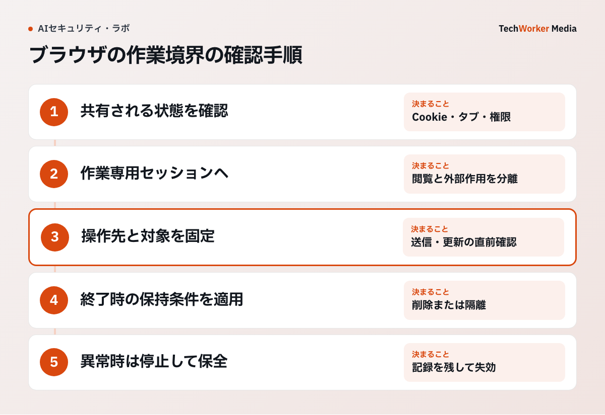
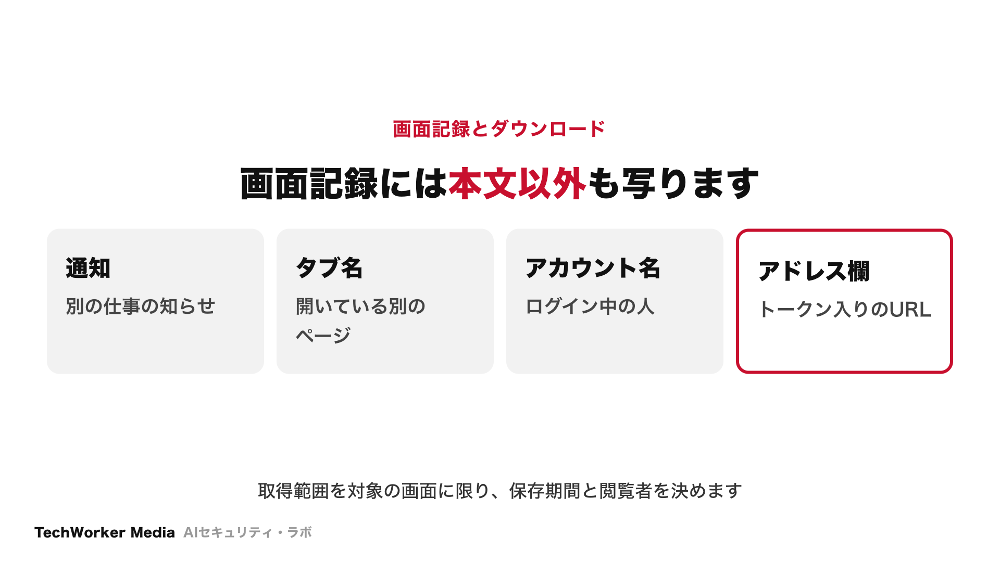
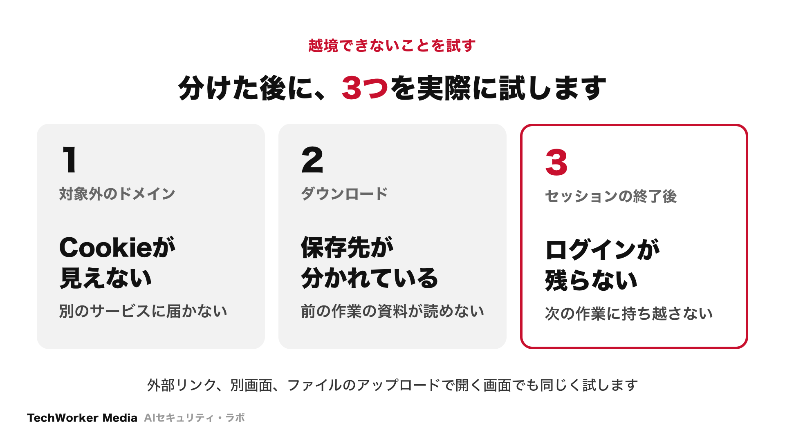

AIにブラウザ操作を任せると、ログイン済みのサービスで閲覧や書き込みができる場合があります。仕事の依頼と関係のないアカウントまで触らせないために、操作するサイトと作業環境を限定します。Chromeの公式資料が挙げる制限から確認します。
一次資料：Chromeが示す、操作できるサイトの制限（2026年6月9日、確認：2026年10月6日）
Restrict the set of web origins the agent can interact with to those relevant to the user's task.
出典：Chrome for Developers, Agent security considerations for WebMCP。引用では、エージェントが操作できるウェブサイトを、利用者の依頼に関係する範囲へ制限するよう求めています。

Chromeの公式資料はブラウザ内エージェントの権限継承を問題にする
ブラウザ上のエージェントは、表示中のページだけを扱うとは限りません。同じ専用環境のCookie、ログイン状態、保存先、クリップボードへ届く可能性があります。ウェブから届く指示を信頼すると、既存セッションの権限で意図しない操作が実行されます。
対策の出発点は、入力文を工夫することではなく、セッションそのものを分けることです。
3つのセッションを用途で分ける
公開情報の調査は、ログインしない使い捨てセッションで行います。社内SaaSの閲覧は、対象サービスだけへログインした専用環境にします。送信や設定変更は、別セッションで開き、実行前に人が対象と差分を確認します。
普段使いの環境には、メール、請求、管理画面のセッションが混在します。便利でも、その環境をエージェントには渡しません。エージェント専用環境では、パスワード管理機能の自動入力とブラウザ同期を無効にするか、対象認証情報だけに絞ります。
画面記録とダウンロードを機密データとして扱う
画面記録には、本文以外に通知、タブ名、アカウント名が写ります。取得範囲を対象画面へ限定し、保存期間と閲覧者を決めます。AIへの入力や記録から機密データを止める規則は、AI DLPとはで製品ごとに比べています。URLの問合せ文字列にトークンが入るサービスでは、アドレス欄も記録対象から外します。

ダウンロードは専用フォルダーへ置き、終了時に残存を確認します。別作業が同じフォルダーや専用環境を再利用すると、前の顧客資料を次の作業が読めます。
越境できないことを実際に試す
専用環境で、対象外ドメインのCookieが見えないこと、ダウンロード先が分かれていること、セッション終了後にログインが残らないことを確かめます。外部リンク、別画面、ファイルのアップロードが別画面を開く場合も同じです。

分離は設定値の確認だけでは足りません。実際の操作経路で越境が失敗するところまで試します。
AIの出力を画面に表示するときの危険は生成AIのMarkdown表示でXSSリスクを減らすで、APIの回数と費用の上限はLLM APIの高額請求を防ぐで説明しています。サイトを運営する側でAIのアクセスを制御する方法は、AIクローラーからサイトを守るにまとめました。
よくある質問
使わせません。普段使いの環境には、メール、請求、管理画面のセッションが混在しています。エージェントには用途ごとの専用環境を渡します。
公開情報の調査はログインしない使い捨てのセッションで行います。社内SaaSの閲覧は、対象サービスだけにログインした専用環境にします。送信や設定変更は別のセッションで開き、実行前に人が対象と差分を確認します。
エージェント専用の環境では、パスワード管理機能の自動入力とブラウザの同期を無効にします。使う場合は、対象の認証情報だけに絞ります。
画面記録には、本文のほかに通知、タブ名、アカウント名が写ります。取得範囲を対象の画面に限り、保存期間と閲覧者を決めます。URLの問合せ文字列にトークンが入るサービスでは、アドレス欄も記録の対象から外します。
専用環境で、対象外のドメインのCookieが見えないこと、ダウンロード先が分かれていること、終了後にログインが残らないことを試します。設定値を見るだけで終えず、実際の操作経路で越境が失敗するところまで確かめます。